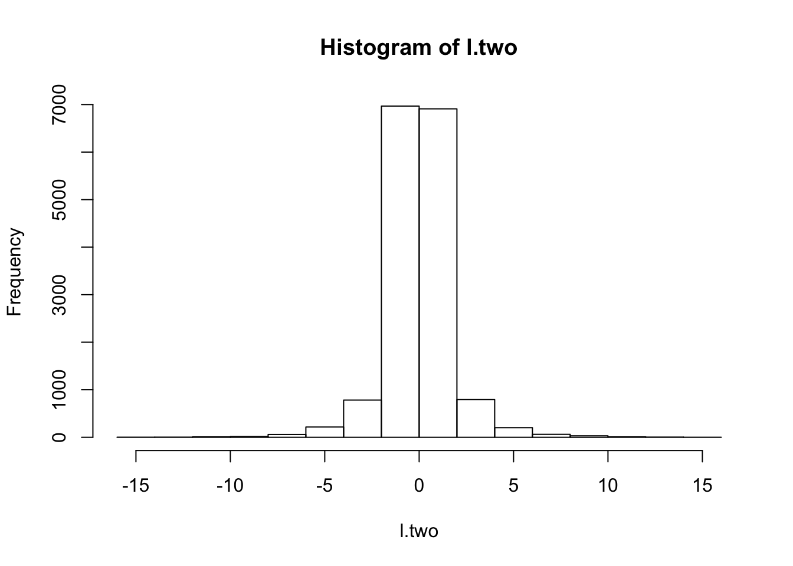
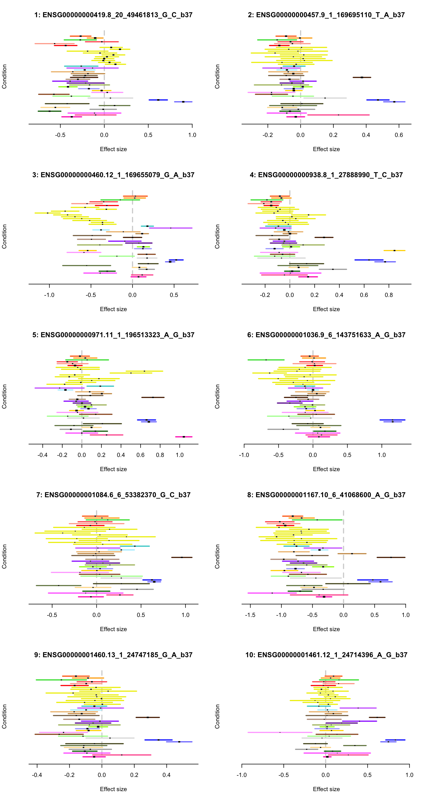
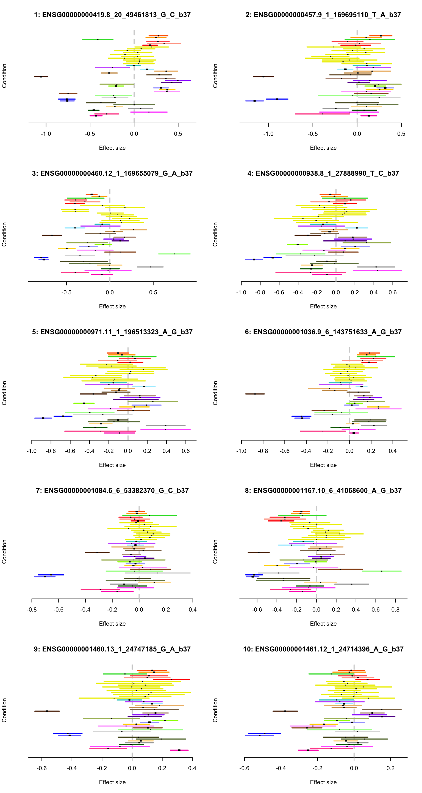
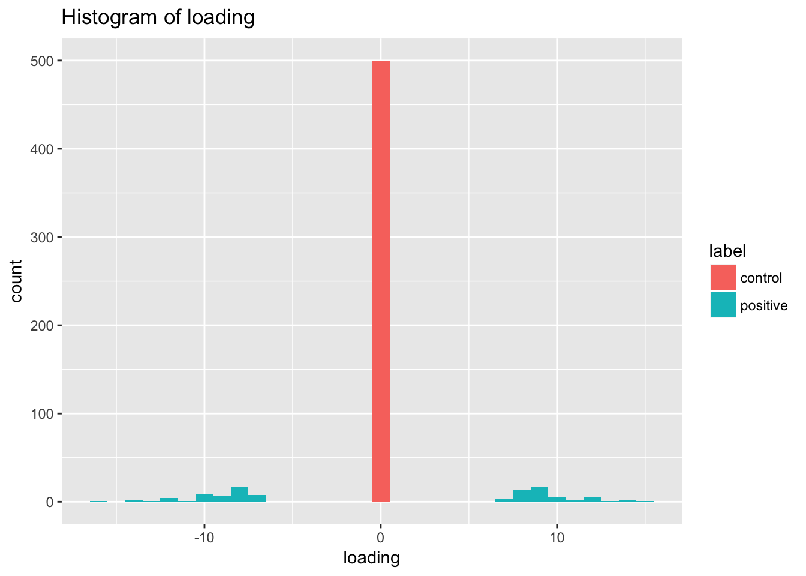
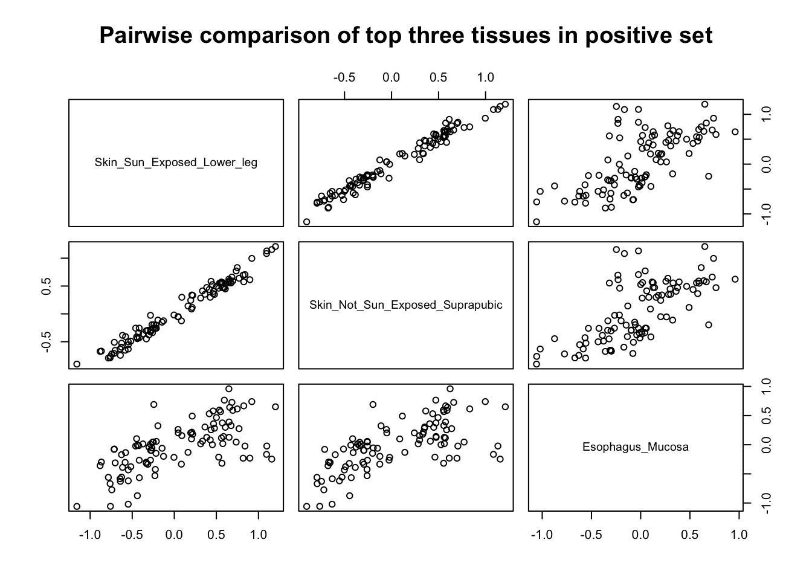
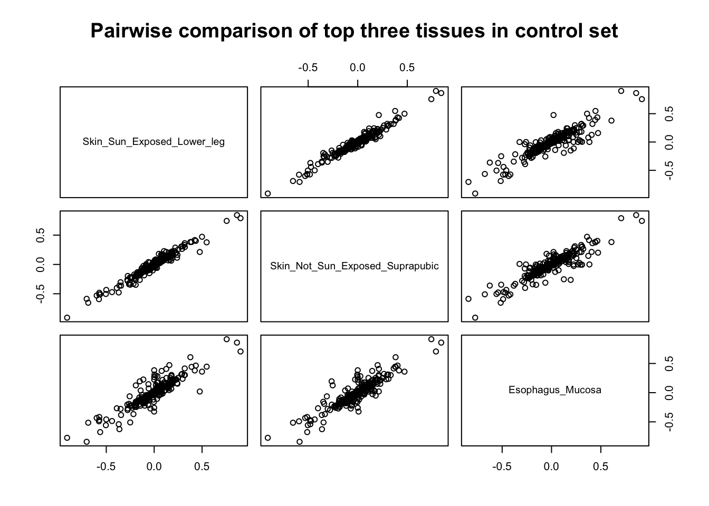
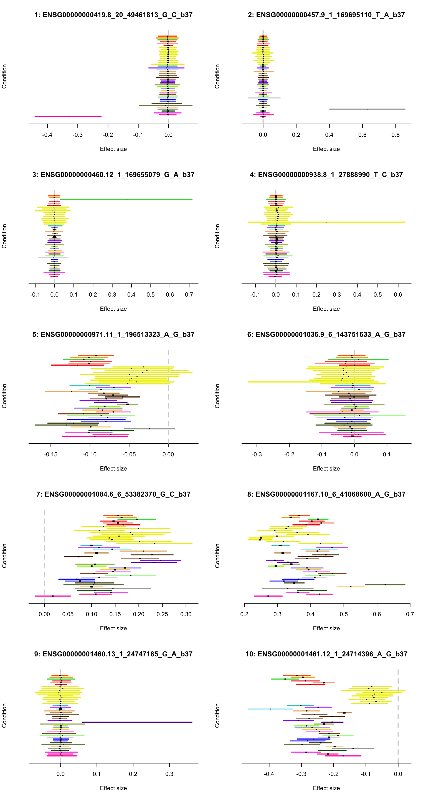
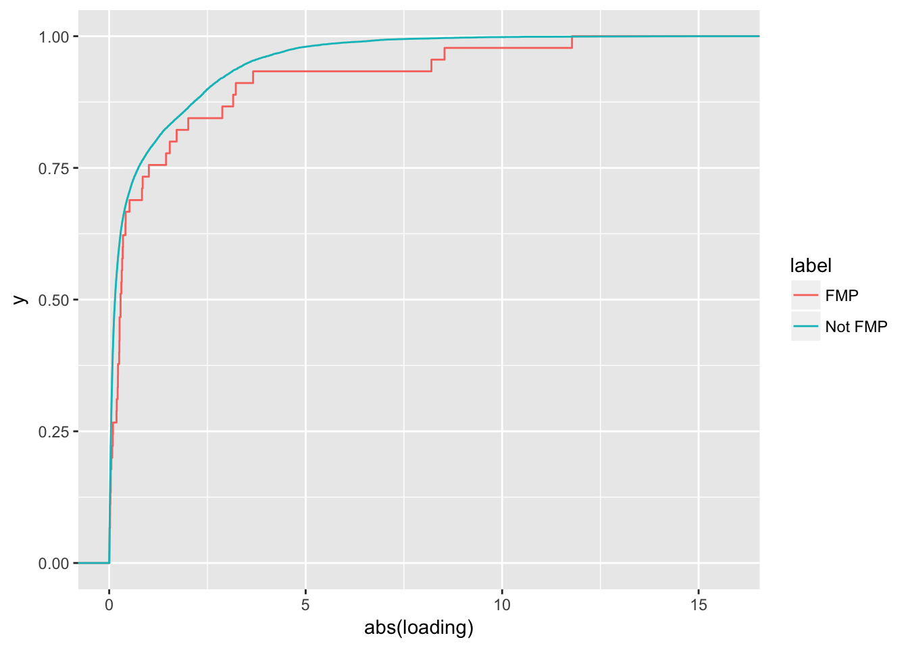
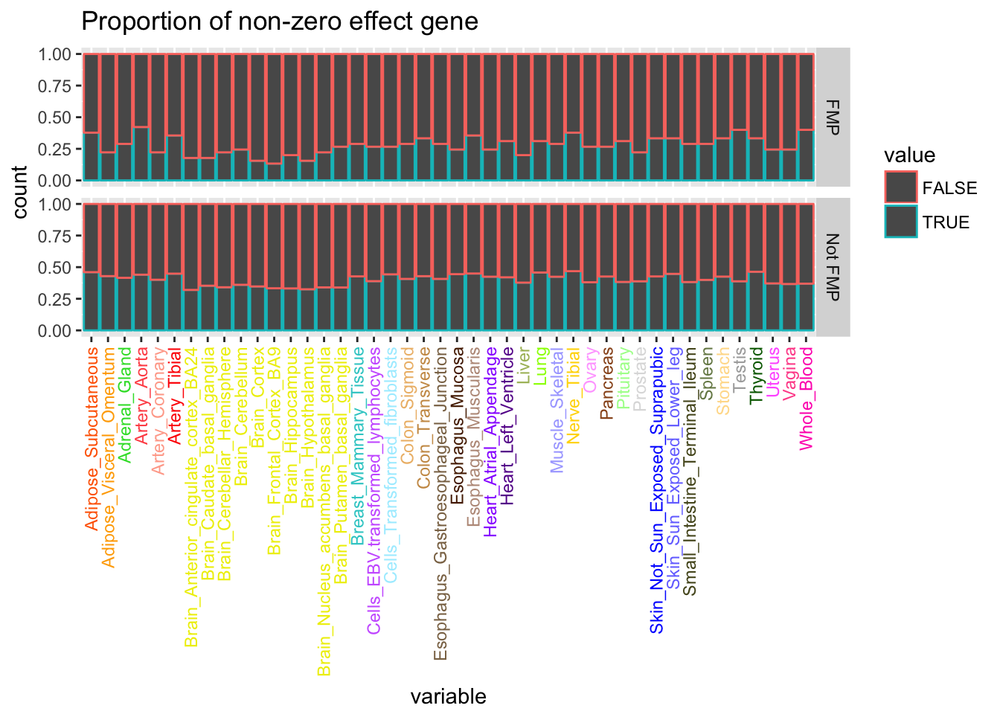
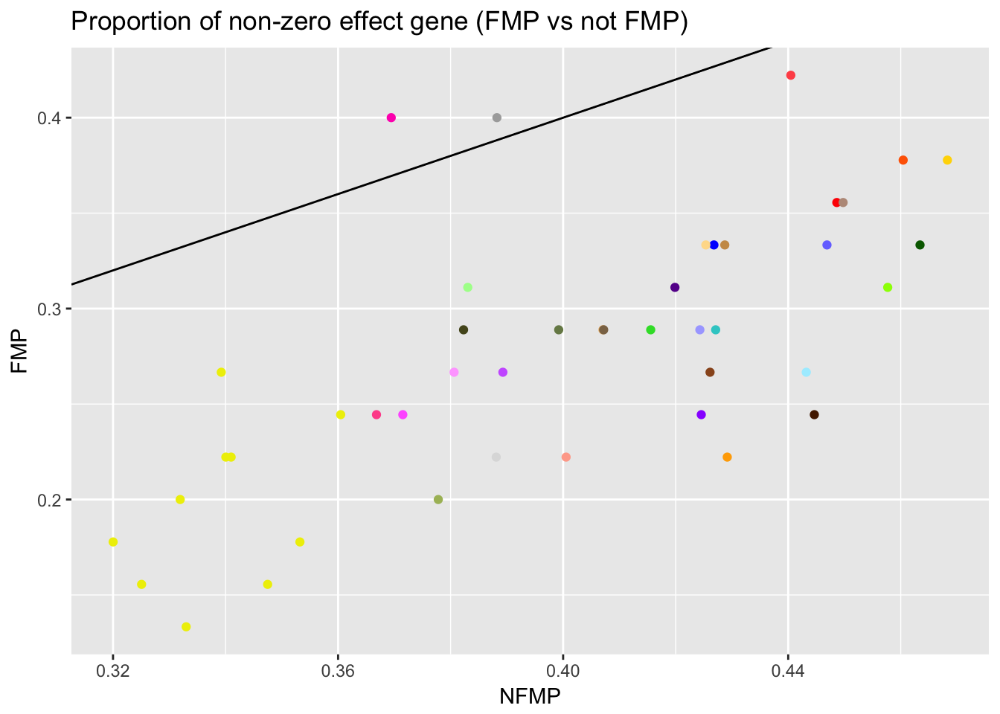

source('../scripts/mylib.R')
library(ggplot2)
library(mashr)
library(biomaRt)
library(dplyr)
library(topGO)
library(pander)
library(rmeta)
library(reshape2)
panderOptions('knitr.auto.asis', FALSE)
panderOptions('table.split.table', Inf)flash <- readRDS('../output/gtex_flash.rds')
mash <- readRDS('../output/gtex_mash.rds')
eqtl <- read.table('../output/strong_eqtl_names.txt')$V1
## get gtex color
gtex.color <- read.table(url('https://github.com/stephenslab/gtexresults/raw/master/data/GTExColors.txt'), sep = '\t', comment.char = '')
gtex.color <- gtex.color[c(1:6,9:18,21:23,26:30,32,33,35,36,38:53), 1:2]
tissue.color <- as.character(gtex.color[,2])
ntissue <- nrow(gtex.color)See details of factor 3 at here
l <- flash$EL
dim(l)## [1] 16069 23l.two <- l[, 3]
top.tissue.idx <- order(abs(flash$EF[, 3]), decreasing = T)[1 : 3]
hist(l.two)
top.ten.idx <- order(l.two, decreasing = T)[1:10]
bottom.ten.idx <- order(l.two, decreasing = F)[1:10]par(mfrow = c(5, 2))
for(i in 1 : 10) {
mash_plot_meta(mash$posterior, top.ten.idx[i], color = meta.colors(lines = tissue.color), main = paste0(i, ': ', eqtl[i]))
}
par(mfrow = c(5, 2))
for(i in 1 : 10) {
mash_plot_meta(mash$posterior, bottom.ten.idx[i], color = meta.colors(lines = tissue.color), main = paste0(i, ': ', eqtl[i]))
}
EQTLs with top and bottom loadings (50 respectively) are used as positive set and 500 eQTLs with most modest loading as background set.
ensembl <- useMart(biomart="ENSEMBL_MART_ENSEMBL", host="feb2014.archive.ensembl.org", path="/biomart/martservice", dataset="hsapiens_gene_ensembl")
positive.idx <- c(order(l.two, decreasing = T)[1:50], order(l.two, decreasing = F)[1:50])
control.idx <- order(abs(l.two), decreasing = F)[1:500]
positive.re <- annotateEQTL(eqtl, positive.idx, ensembl)
control.re <- annotateEQTL(eqtl, control.idx, ensembl)
gene2go <- list()
gene2go <- genGene2GO(gene2go, positive.re)
gene2go <- genGene2GO(gene2go, control.re)
all.gene <- union(unique(positive.re$ensembl_gene_id), unique(control.re$ensembl_gene_id))
gene.list <- factor(as.integer(all.gene %in% unique(positive.re$ensembl_gene_id)))
names(gene.list) <- all.gene
map <- list(BP = 'Biological process', MF = 'Molecular function', CC = 'Cellular component')
for(i in c('BP', 'MF', 'CC')) {
cat('##', map[[i]])
cat('\n')
GOdata <- new("topGOdata", ontology = i, allGenes = gene.list, annot = annFUN.gene2GO, gene2GO = gene2go)
resultFisher <- runTest(GOdata, algorithm = "classic", statistic = "fisher")
allRes <- GenTable(GOdata, classicFisher = resultFisher)
pander(allRes, caption = i)
cat('\n')
cat('\n')
}##
## Building most specific GOs .....## ( 1521 GO terms found. )##
## Build GO DAG topology ..........## ( 4106 GO terms and 9231 relations. )##
## Annotating nodes ...............## ( 365 genes annotated to the GO terms. )##
## -- Classic Algorithm --
##
## the algorithm is scoring 1688 nontrivial nodes
## parameters:
## test statistic: fisher| GO.ID | Term | Annotated | Significant | Expected | classicFisher |
|---|---|---|---|---|---|
| GO:0006631 | fatty acid metabolic process | 8 | 6 | 1.67 | 0.0013 |
| GO:0032787 | monocarboxylic acid metabolic process | 16 | 8 | 3.33 | 0.0076 |
| GO:0019752 | carboxylic acid metabolic process | 26 | 11 | 5.41 | 0.0083 |
| GO:0043436 | oxoacid metabolic process | 26 | 11 | 5.41 | 0.0083 |
| GO:0030323 | respiratory tube development | 3 | 3 | 0.62 | 0.0087 |
| GO:0006082 | organic acid metabolic process | 28 | 11 | 5.83 | 0.0159 |
| GO:0006766 | vitamin metabolic process | 6 | 4 | 1.25 | 0.0187 |
| GO:0006767 | water-soluble vitamin metabolic process | 6 | 4 | 1.25 | 0.0187 |
| GO:0006805 | xenobiotic metabolic process | 6 | 4 | 1.25 | 0.0187 |
| GO:0009410 | response to xenobiotic stimulus | 6 | 4 | 1.25 | 0.0187 |
##
## Building most specific GOs .....## ( 514 GO terms found. )##
## Build GO DAG topology ..........## ( 834 GO terms and 1054 relations. )##
## Annotating nodes ...............## ( 382 genes annotated to the GO terms. )##
## -- Classic Algorithm --
##
## the algorithm is scoring 336 nontrivial nodes
## parameters:
## test statistic: fisher| GO.ID | Term | Annotated | Significant | Expected | classicFisher |
|---|---|---|---|---|---|
| GO:0048037 | cofactor binding | 8 | 6 | 1.65 | 0.0013 |
| GO:0050662 | coenzyme binding | 8 | 6 | 1.65 | 0.0013 |
| GO:0016491 | oxidoreductase activity | 28 | 12 | 5.79 | 0.0048 |
| GO:0016614 | oxidoreductase activity, acting on CH-OH… | 6 | 4 | 1.24 | 0.0183 |
| GO:0016616 | oxidoreductase activity, acting on the C… | 6 | 4 | 1.24 | 0.0183 |
| GO:0035091 | phosphatidylinositol binding | 6 | 4 | 1.24 | 0.0183 |
| GO:0051287 | NAD binding | 6 | 4 | 1.24 | 0.0183 |
| GO:1901981 | phosphatidylinositol phosphate binding | 4 | 3 | 0.83 | 0.0292 |
| GO:0016651 | oxidoreductase activity, acting on NAD(P… | 2 | 2 | 0.41 | 0.0423 |
| GO:0016655 | oxidoreductase activity, acting on NAD(P… | 2 | 2 | 0.41 | 0.0423 |
##
## Building most specific GOs .....## ( 307 GO terms found. )##
## Build GO DAG topology ..........## ( 539 GO terms and 1078 relations. )##
## Annotating nodes ...............## ( 391 genes annotated to the GO terms. )##
## -- Classic Algorithm --
##
## the algorithm is scoring 259 nontrivial nodes
## parameters:
## test statistic: fisher| GO.ID | Term | Annotated | Significant | Expected | classicFisher |
|---|---|---|---|---|---|
| GO:0098588 | bounding membrane of organelle | 33 | 13 | 7.09 | 0.011 |
| GO:0031090 | organelle membrane | 64 | 21 | 13.75 | 0.015 |
| GO:0005576 | extracellular region | 49 | 16 | 10.53 | 0.036 |
| GO:0009925 | basal plasma membrane | 2 | 2 | 0.43 | 0.046 |
| GO:0031985 | Golgi cisterna | 2 | 2 | 0.43 | 0.046 |
| GO:0032580 | Golgi cisterna membrane | 2 | 2 | 0.43 | 0.046 |
| GO:0045178 | basal part of cell | 2 | 2 | 0.43 | 0.046 |
| GO:0000139 | Golgi membrane | 15 | 6 | 3.22 | 0.078 |
| GO:0016020 | membrane | 169 | 42 | 36.31 | 0.099 |
| GO:0031253 | cell projection membrane | 6 | 3 | 1.29 | 0.116 |
It turns out that these top genes are enriched in metabolic process.
df <- data.frame(loading = l.two[c(positive.idx, control.idx)], label = c(rep('positive', length(positive.idx)), rep('control', length(control.idx))))
ggplot(df) + geom_histogram(aes(x = loading, group = label, fill = label), binwidth = 1) + ggtitle('Histogram of loading')
df.load <- mash$posterior$result$PosteriorMean[positive.idx, top.tissue.idx]
pairs(df.load, main = 'Pairwise comparison of top three tissues in positive set')
df.load <- mash$posterior$result$PosteriorMean[control.idx, top.tissue.idx]
pairs(df.load, main = 'Pairwise comparison of top three tissues in control set')
random.idx <- sample(control.idx, 10, replace = F)
par(mfrow = c(5, 2))
for(i in 1 : 10) {
mash_plot_meta(mash$posterior, random.idx[i], color = meta.colors(lines = tissue.color), main = paste0(i, ': ', eqtl[i]))
}
GO term ‘GO:0006631’ is used (represent fatty acid metabolic process)
Contrast eQTL in cation/ion transport with the ones unrelated to cation/ion transport on the loading of factor 3.
re.go <- read.table('../output/strong_eqtl_annotated.txt.gz', header = T)
re.go.dup <- duplicated(re.go[, c('ensembl_gene_id', 'go_id')])
re.go <- re.go[!re.go.dup, ]
cr.gene <- re.go[re.go$go_id == 'GO:0006631', 'idx']
tspt <- rep('Not FMP', length(l.two))
tspt[unique(cr.gene)] <- 'FMP'
df <- data.frame(loading = l.two, label = tspt)
ggplot(df, aes(x = abs(loading), color = label)) + stat_ecdf()
ks.test(abs(df$loading[df$label == 'Not FMP']), abs(df$loading[df$label == 'FMP']), alternative = 'g')##
## Two-sample Kolmogorov-Smirnov test
##
## data: abs(df$loading[df$label == "Not FMP"]) and abs(df$loading[df$label == "FMP"])
## D^+ = 0.27814, p-value = 0.0009652
## alternative hypothesis: the CDF of x lies above that of ywilcox.test(abs(df$loading[df$label == 'Not FMP']), abs(df$loading[df$label == 'FMP']), alternative = 'l')##
## Wilcoxon rank sum test with continuity correction
##
## data: abs(df$loading[df$label == "Not FMP"]) and abs(df$loading[df$label == "FMP"])
## W = 293530, p-value = 0.01553
## alternative hypothesis: true location shift is less than 0The result supports the hypothesis that the eQTLs with strong loading on factor 3 are enriched in the fatty acid metabolic process.
Contrast effect size
df <- data.frame(mash$posterior$result$PosteriorMean[, ])
df.se <- data.frame(mash$posterior$result$PosteriorSD[, ])
col <- colnames(df)
df.sig <- data.frame(abs(df) > df.se * 1.96)
df.sig$label <- tspt
df.sig <- melt(df.sig, id.vars = 'label')
ggplot(df.sig) +
geom_bar(aes(x = variable, group = value, color = value), position = "fill") +
facet_grid(label~.) +
scale_fill_manual(values = tissue.color, guide = FALSE) +
theme(axis.text.x = element_text(angle = 90, hjust = 1, vjust = 0.5, color = tissue.color)) +
ggtitle('Proportion of non-zero effect gene')
df.prop <- df.sig %>% group_by(variable, label) %>%
summarise(prop = sum(value) / length(value))
df <- data.frame(FMP = df.prop$prop[df.prop$label == 'FMP'], NFMP = df.prop$prop[df.prop$label == 'Not FMP'], tissue = df.prop$variable[df.prop$label == 'FMP'])
ggplot(df) + geom_point(aes(x = NFMP, y = FMP, color = tissue)) +
scale_color_manual(values = tissue.color, guide = FALSE) + geom_abline(slope = 1, intercept = 0) +
ggtitle('Proportion of non-zero effect gene (FMP vs not FMP)')